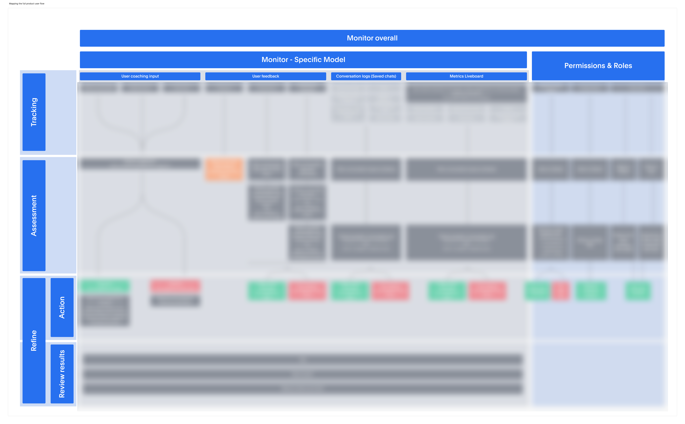
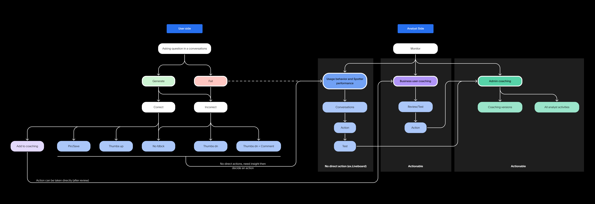
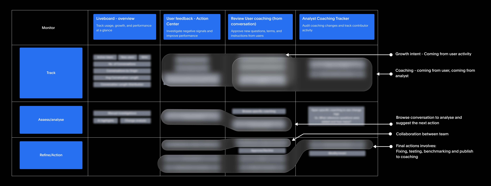
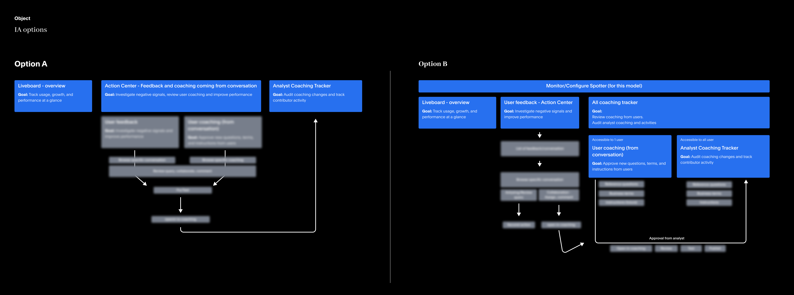
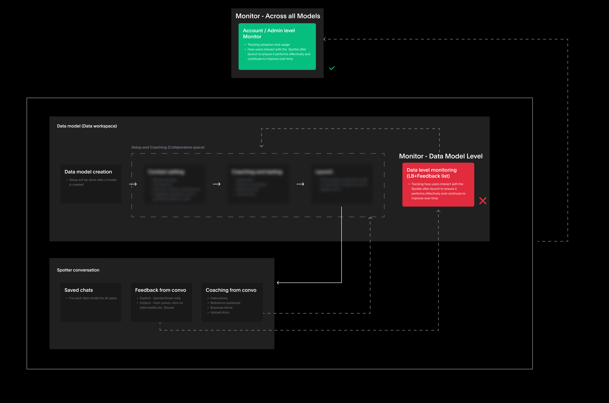
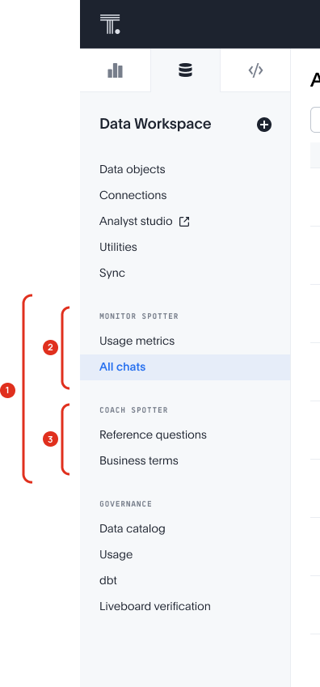
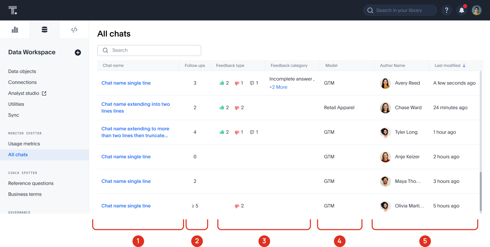
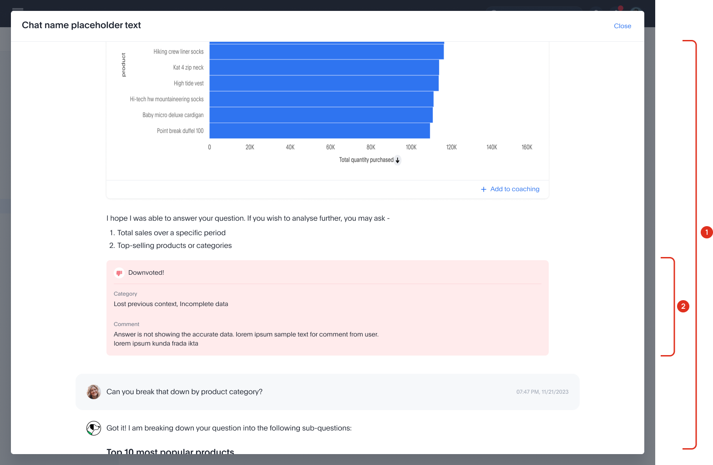

Conversation monitoring system for Analysts
Analysts are responsible for Spotter’s accuracy, but once it is deployed they have limited visibility into how it performs. I designed a monitoring experience that helps them find important conversations, understand failures, and improve Spotter through coaching.
Once Spotter was deployed, analysts had no clear way to understand whether it was succeeding. Questions about adoption, answer quality, user trust, and configuration effectiveness required navigating multiple disconnected tools and datasets.
Without visibility, improving Spotter became reactive and difficult to scale.
Monitoring created a single destination for understanding AI performance, identifying opportunities for improvement, and continuously refining the assistant over time.
Solved IA
Brought all Spotter activities under one consolidated panel.
Conversation Monitoring
Designed end-to-end UX workflow to find, assess, and take action on conversations.
Context
Spotter is a conversational AI agent that answers business questions in natural language and delivers insights from your data.
Analysts enable, configure and manage Spotter, ensuring it provides accurate, reliable answers to all enterprise business users.
Once Spotter is live, analysts lose visibility into:
- What users are asking
- Which conversations fail
- Whether users are satisfied
- How effective current coaching is
- What should be improved next

Create a surface where analysts can view Spotter conversations.
With research, we noticed analysts also needed to:
- Find conversations that required attention
- Understand what went wrong
- Decide what action to take
Design a workflow that helps analysts find, review, and improve Spotter conversations.
Design Journey
What began as a request to view conversations evolved through research, exploration, and product tradeoffs. Each stage helped define what analysts needed, what monitoring should support, and what was intentionally left out of V1.
The brief
Customers wanted conversation monitoring. Our initial assumption was that visibility alone would solve the problem.
Research
Customer calls · Analyst interviews · Customer feedback on Slack · Workflow audit.
Competition research
Across the multiple enterprise products we reviewed, monitoring followed a similar structure: surface relevant signals, help users understand them, and enable action. This became the framework for defining Spotter’s monitoring experience.
Product audit
Current Spotter features were fragmented across surfaces — surfacing a second problem alongside the primary one of defining monitoring.
Reduce fragmentation.
Create one home for all Spotter features — fix the IA.


Ideation
Early vision + architecture explorations. Tried to map all Spotter activities under one structure. Explored central vs model-level architecture.
├ All Spotter conversations
├ Coaching (reference questions, business terms)
└ Usage metrics


Scope decisions
Monitoring at central level, not per data model.
Centralising makes it easier to scale — one surface, all conversations, no duplication per model.
Coaching removed from V1.
Coaching space was still evolving and confusing — could cause scalability issues. Focus only on monitoring conversations first.

V1 scope
Bring all Spotter features — monitoring, coaching, usage — into one place in the main sidebar.
Final design
Several iterations later — the shipped design.
Defining the boundaries of V1
“We explored several directions beyond conversation monitoring. While each addressed real user needs, they expanded the product beyond the core problem we were trying to solve.”
| Exploration | Why we explored it | Why it didn’t make V1 |
|---|---|---|
| Benchmarking | Measure whether coaching improves Spotter over time. | Required scoring systems, baselines, and long-term evaluation infrastructure. |
| Collaboration | Route conversations to domain experts for review. | Introduced ownership, assignment, and workflow management complexity. |
| Full auditing | Create a complete record of AI performance and investigation history. | Shifted the product toward governance and operations rather than monitoring. |
The decision
These explorations helped us distinguish between valuable opportunities and the core problem that needed solving. Rather than building a governance, benchmarking, or workflow management platform, we focused V1 on a simpler objective: help analysts find important conversations, understand what happened, and take action through coaching.
Final Solutions
Fixing the IA.
Centralised IA
A single panel for all Spotter activities — scalable as we now look at Spotter across Data Models, rather than within individual Data Models.
Monitor Spotter
Usage metrics is the Liveboard itself. All Chats is what we designed from scratch. Both now live here, inside the analyst workflow.
Coach Spotter
Reference questions and Business terms were already in this panel, grouped together. Surfacing them under Coach Spotter made the consolidation intentional — analysts now access all things Spotter from one place, even across separate jobs.

Data workspace — side panel
Monitoring conversation

Conversation
- Understand user intent.
- Search for relevant conversations.
Follow-ups
- Signal uncertainty or unresolved answers.
- Highlight conversations worth reviewing.
Feedback
- Direct indicator of user satisfaction.
- Prioritize conversations needing attention.
Data model
- Focus on owned areas.
- Reduce investigation noise.
User & recency
- Narrow investigations by user or timeframe.
- Validate outcomes after coaching updates.
Analyst arrives without a lead. Signal-rich columns — feedback type, category, conversation length, thumbs — surface what deserves attention before opening a single chat.
Analyst has a topic or chat reference in mind. Search works inside conversations, not just titles — so a specific question surfaces even if it never made it into the chat name.

Complete conversation context
Analysts can review the same conversation the business user experienced, including Spotter's responses, follow-up questions, and generated charts.
Feedback surfaced in context
User feedback is highlighted directly beneath the answer it refers to, helping analysts quickly identify and assess failures.
Conversation visibility was the primary request from analysts. Seeing the full interaction helps them understand how users ask questions and where Spotter breaks down.
Feedback acts as a shortcut to potential failures, helping analysts focus their investigation without reviewing every message in the thread.

- Save any question-answer mapping directly to coaching.
- Correct an inaccurate response before saving it, turning a failure into a coaching opportunity.
- Monitoring and coaching become part of the same workflow.
- Analysts can act on issues while the conversation, response, and feedback are still in context.
- Reduces the manual effort of recreating problems and translating findings into coaching.
Expected impact
Analysts no longer need to manually sift through conversation logs or recreate failures in Spotter.
Multiple signals help surface conversations that deserve attention, reducing reliance on manual review.
Issues discovered during monitoring can be converted directly into coaching examples, reducing friction between investigation and action.
My experience & learnings
This was my first end-to-end strategic project, spanning product strategy, information architecture, and UX design. What began as a request for conversation visibility evolved into a broader challenge of defining what monitoring should mean for Spotter.
As the project progressed, I explored several directions including auditing, benchmarking, and collaboration workflows. While each addressed legitimate user needs, they also expanded the scope beyond the core problem we were trying to solve.
The most important lesson was realizing that deeper understanding often leads to simpler solutions. The final experience was significantly more focused than many of the concepts explored along the way, yet it better supported what analysts actually needed: finding issues, understanding them, and improving Spotter.
Exposing conversations was only the starting point. Effective monitoring required helping analysts identify issues, understand them, and take action.
Many of the strongest ideas explored during the project never became part of the final solution. Their value was in helping define the boundaries of the product and clarifying what belonged in V1.
The final solution succeeded because it connected discovery, investigation, and coaching into a single workflow. The value came from reducing friction between these steps, not from any individual feature.
What I'd do differently
Exploration creates clarity, but it needs boundaries
Some of the most valuable insights came from ideas that never shipped. Exploring adjacent problems helped us understand the opportunity space and make more informed decisions. However, every new direction increased complexity, expanded scope, and demanded additional time for validation and design. The challenge was knowing when to continue exploring and when to commit to a focused approach.